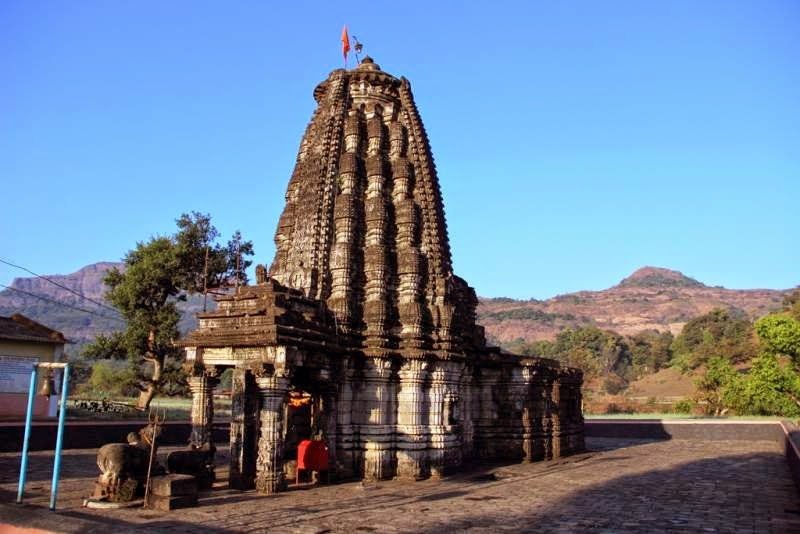

Location: Village: Ratanwadi (India | Maharashtra | Bhandardara)
Mountain range: Western Ghats
Best Time to Visit:Monsoon Season (June to October) & Maha Shivratri
Amruteshwar Temple, is an ancient Shiva temple situated on the banks of holy river Pravara at Ratanwadi village in the Igatpuri region of Maharashtra.
It is among the popular Bhandardara tourist places and is maintained by the Archaeological Survey of India.
Temple shows Hemadpanthi style of architecture and was built 1000 years ago
The temple has an exquisite feature like the there is a hot spring below the Shiv Lingam. In monsoon, when the level of hot spring rises, the main sanctum fills with water. Around the temple, there's a pond, which also carries beautifully sculptures made out of black stone.
The ceiling and the walls of the temple are decorated with some impressive and lovely murals.
Distance from Major Cities:The route through road to Ratanwadi is very tedious and unvarying causing discomfort to the passengers also buses are not regular. Regardlessly you can go till Bhandardara by road and then take a boat ride to reach Ratanwadi.
Also with frequent boats available from Arthur Lake in Bhandardara to Ratanwadi is the most convenient and comfortable way to reach Ratanwadi.
More Images:
{kind=link}
{kind=link}